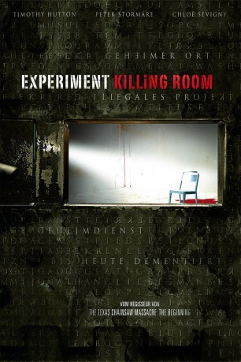

#7547 Experiment Killing Room
Alternativ: The Killing Room
 
 IMDB-Wertung: 5.7 / 10
IMDB-Wertung: 5.7 / 10  Metascore: 0
Metascore: 0 
Kerry, Tony, Crawford und Paul haben keine Ahnung, worauf sie sich eingelassen haben, als sie sich als Freiwillige für eine Forschungsstudie der Regierung angemeldet haben. Der Leiter des Forschungsteams eröffnet ihnen, dass die Belastbarkeit und Grenzen der menschlichen Psyche im Laufe eines Eliminierungs-Prozesses erkundet werden soll, bei dem die Teilnehmerzahl von vier auf eins reduziert wird. Das Experiment hat soeben begonnen ...
Jahr: 2009
Dauer: 93 Minuten
FSK: 16
Land: USA Studio: Genius EntertainmentTonspuren: DTS - ,
Untertitel: Deutsch,
Auflösung: 1080p (1920x816) Größe: 5621 MB
Genre: Thriller, Mystery
Regisseur: Jonathan Liebesman
Drehbuch: Gus Krieger
Soundtrack:
Darsteller:
Datei: X:\2009(A-F)\Experiment Killing Room (2009, FSK16, 1920x816).mkv seit 20.11.2017
Festplatte: HD 2008(G-Z)-2009(A-F)
 Es gibt insgesamt 91 Filme in der Gruppe '2009(A-F)'
Es gibt insgesamt 91 Filme in der Gruppe '2009(A-F)'